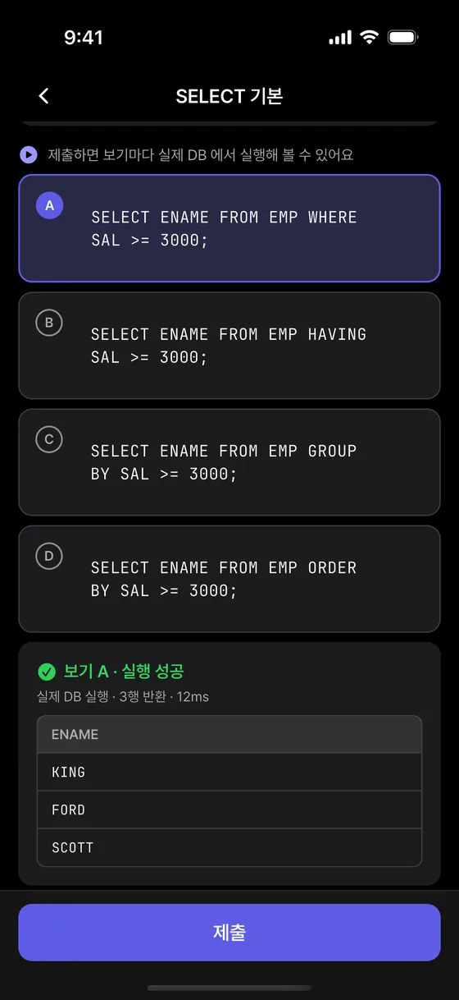
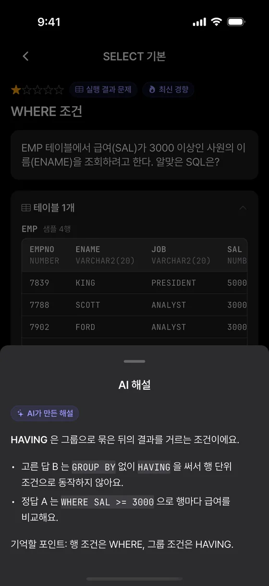
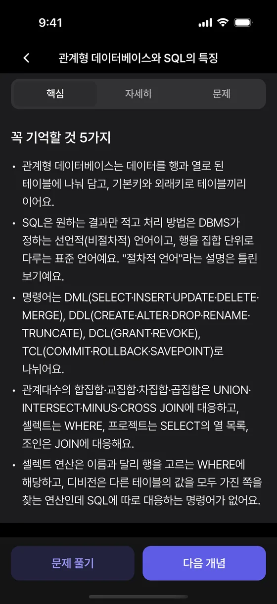
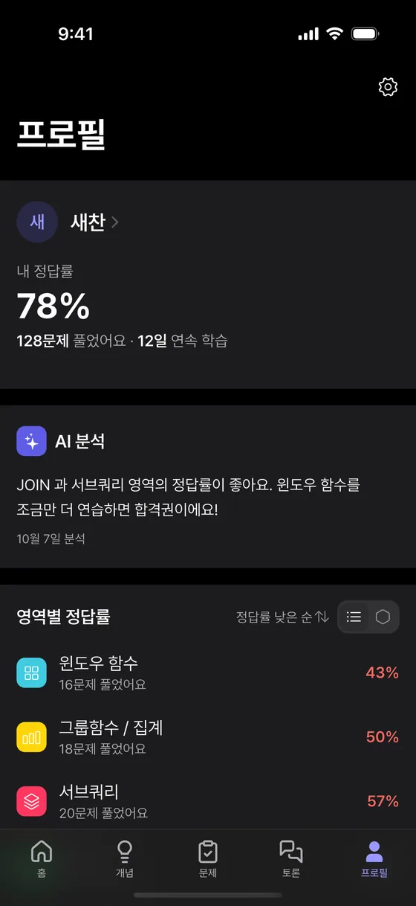
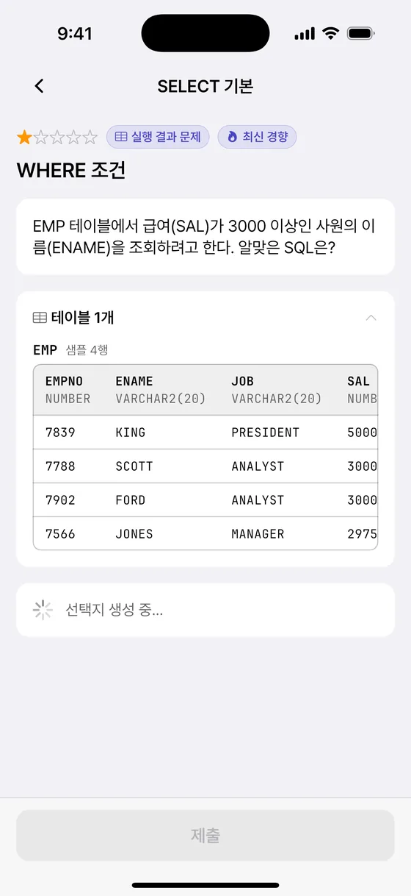
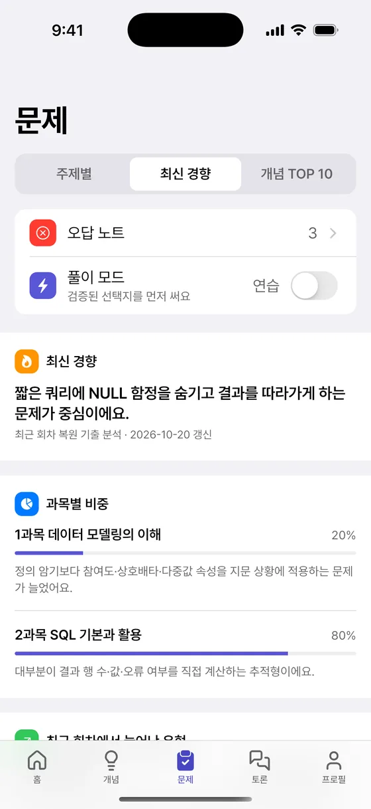
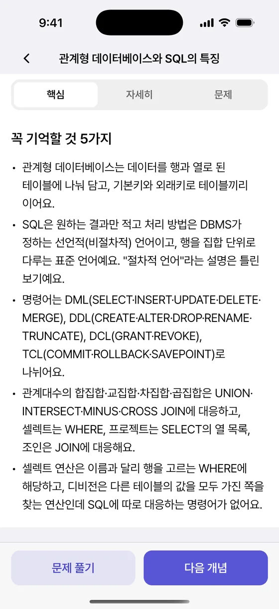
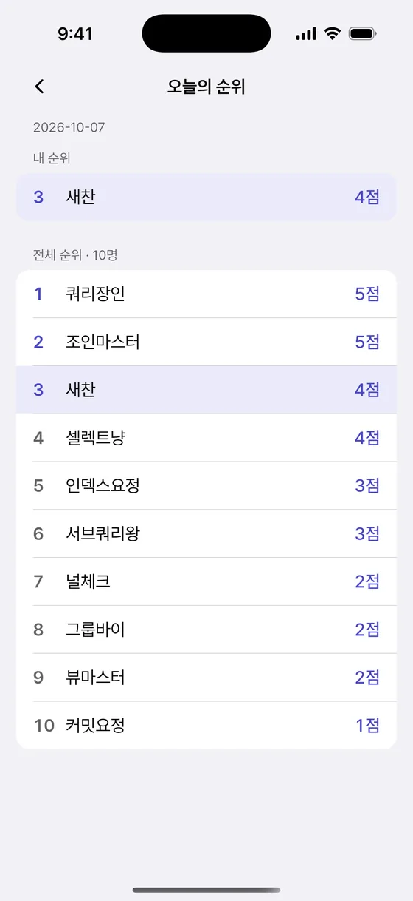

수험서가 너무 두꺼워요
책 없이 문제로 시작해요. 시험 범위를 주제별로 나눠 휴대폰으로 틈틈이 풀어요.
SQLD 자격증 문제 풀이 앱
SQLD 제63회까지
두꺼운 수험서 대신 최신 출제 경향을 반영한 문제를 풀고, 틀린 이유는 AI 해설로 바로 확인하세요. 매일 5문제부터 합격 준비도까지 passQL 하나면 충분해요.
무료로 시작 · 소셜 계정으로 바로 로그인 · iPhone, Android, 웹 어디서나 같은 기록
SQLD 제63회까지
2026년 11월 14일 (토)
2026년 11월 14일 (토)




9개
SQLD 출제 주제
5회차
최근 기출 경향 분석
5문제
매일 오늘의 세트
0원
지금은 모든 기능 무료
수험생 고민
passQL은 이 네 가지를 풀려고 만들었어요.
수험서가 너무 두꺼워요
책 없이 문제로 시작해요. 시험 범위를 주제별로 나눠 휴대폰으로 틈틈이 풀어요.
요즘 시험 경향을 모르겠어요
제58~62회 복원 기출과 수험생 후기를 분석해 과목별 비중과 늘어난 유형을 보여 줘요.
왜 틀렸는지 모르겠어요
내가 고른 답이 왜 틀렸는지, 정답과 무엇이 다른지 AI 해설이 바로 짚어 줘요.
꾸준히 하기가 어려워요
하루 5문제 오늘의 세트와 연속 학습일, 시험 D-day 알림이 매일 공부를 이어 줘요.
이렇게 공부해요
문제 하나를 풀 때마다 결과 표와 해설이 함께 따라와요.
SQL 직접 실행
제출하면 보기마다 실제 DB에서 SQL을 실행해요. 틀리면 내 답과 정답의 결과 표를 나란히 비교해 어디서 갈렸는지 보여 줘요.

매번 새 선택지
같은 문제도 풀 때마다 선택지가 새로 바뀌어요. 보기 순서를 외우는 대신 개념으로 푸는 힘이 붙어요.
AI 해설
내가 고른 오답이 왜 틀렸는지, 정답과 무엇이 다른지, 시험장에서 기억할 포인트까지 한 번에 정리해요.
단원별 개념 학습
단원마다 꼭 기억할 것을 먼저 읽고, 자세히 보고, 바로 문제로 확인해요. 두꺼운 수험서 없이도 흐름이 잡혀요.
합격 준비도
정답률과 영역별 약점, AI 분석으로 지금 어디가 약한지 알려 줘요. 약한 주제부터 다시 풀면 돼요.
기능
문제, 해설, 경향, 기록까지. 다른 교재나 앱을 오가지 않아도 돼요.
매일 모든 회원이 같은 5문제를 풀고 순위를 확인해요. 부담 없는 분량이라 매일 이어 가기 좋아요.
핵심, 자세히, 문제 세 단계로 단원을 익혀요. 꼭 기억할 것을 읽고 바로 문제로 확인해요.
제출하면 보기마다 실제 DB에서 SQL을 실행해요. 외우지 말고 결과 표로 확인하세요.
틀리면 내가 고른 SQL과 정답 SQL의 실행 결과를 나란히 보여 줘요. 어디서 갈렸는지 바로 보여요.
같은 문제도 풀 때마다 선택지가 새로 바뀌어요. 답을 외우지 않고 개념으로 풀게 돼요.
정답 근거, 시험 팁, 핵심 개념을 정리하고 내가 고른 오답이 왜 틀렸는지 설명해요.
제58~62회 복원 기출과 수험생 후기를 분석했어요. 과목별 비중과 최근 늘어난 유형부터 풀 수 있어요.
데이터 모델링부터 윈도우 함수까지 9개 주제로 나눴어요. 자주 나오는 개념은 TOP 10으로 먼저 잡아요.
틀린 문제는 오답 노트에 모여 다시 풀어요. 연습과 실전 풀이 모드를 골라 쓸 수 있어요.
정답률, 영역별 약점, AI 분석으로 지금 얼마나 준비됐는지, 어디를 더 풀지 보여 줘요.
헷갈리는 문제는 다른 수험생과 이야기 나눠요. 같은 시험을 준비하는 사람들이 모여 있어요.
오늘의 세트가 열리면, 시험이 다가오면 알려 드려요. 시험까지 남은 날도 홈에서 바로 보여요.
학습 흐름
같은 흐름을 반복하면 약한 주제부터 메워져요.
오늘의 세트로 모두가 같은 5문제를 풀고 순위를 확인해요.
정답 근거와 오답 이유, 시험 팁을 바로 읽어요.
틀린 문제만 모아 다시 풀며 약한 곳을 메워요.
정확도·범위·최신성으로 지금 준비 상태를 숫자로 봐요.
최신 경향 미리보기
제58~62회 복원 기출과 수험생 후기·오픈채팅 분석
짧은 쿼리에 NULL 함정을 숨기고 결과를 따라가게 하는 문제가 중심이에요. 62회는 쉬웠다는 말이 많았지만 합격률은 낮았어요.

NOT IN, 빈 결과 집계, NULL 비교, NULL 치환 함수를 섞어 결과를 바꿔요.
보기마다 SQL을 주고 결과 행 수가 가장 많은 것, 결과가 다른 것을 골라요.
인라인 뷰 별칭을 바깥에서 쓰거나 스칼라 서브쿼리가 여러 행을 돌려주는 SQL을 찾아요.
ROWNUM이 ORDER BY보다 먼저 붙는 점과 부등 조건에서 행이 탈락하는 점을 노려요.
시험 범위
주제를 골라 차근차근 풀거나, 자주 나오는 개념 TOP 10부터 잡을 수 있어요. SQLD 시험 안내 보기
앱 화면


SQL 실행, 보기별 AI 해설, 최신 경향, 개념 학습까지 전부 열려 있어요. 가입만 하면 바로 풀 수 있어요.
네, 무료로 내려받아 바로 시작할 수 있고 지금은 SQL 실행, 보기별 AI 해설, 최신 출제 경향까지 모든 기능이 열려 있어요. 나중에 Pro 이용권(1개월·3개월, 자동 결제 없음)이 생기면 무료로는 하루 일정량을 풀 수 있어요.
SQLD 두 과목의 범위를 9개 주제로 나눠 문제를 제공해요. 1과목 데이터 모델링, 2과목 SELECT·DDL/DML/TCL·함수·JOIN·서브쿼리·그룹함수·윈도우 함수·계층과 PIVOT이에요.
제58~62회 복원 기출과 수험생 후기를 분석해 과목별 비중, 최근 늘어난 유형, 자주 나오는 개념 TOP 10을 정리했어요. '최신 경향' 표시가 붙은 문제부터 골라 풀 수 있어요.
매일 열리는 오늘의 세트 5문제가 기본이에요. 여유가 있으면 약한 주제와 오답 노트를 더 풀고, 합격 준비도로 남은 부분을 확인하세요.
SQLP 필기의 데이터 모델링, SQL 기본 및 활용 과목은 SQLD와 범위가 겹쳐 그대로 연습할 수 있어요. SQL 고급 활용 및 튜닝 과목과 실기는 아직 다루지 않아요.
네. passql.vercel.app 에서 로그인하면 앱과 같은 학습 기록으로 이어서 풀 수 있어요.
네. Google Play에서 passQL을 내려받을 수 있어요. iPhone은 App Store, PC는 웹에서 같은 계정으로 이어서 풀 수 있어요.
네. 단원마다 꼭 기억할 것, 자세한 설명, 확인 문제를 순서대로 볼 수 있어요. 개념을 읽고 바로 문제로 확인해요.
SQLD 제63회 · 2026년 11월 14일 (토)
오늘의 세트 한 번만 풀어 보세요. 어디가 약한지 바로 보여요.